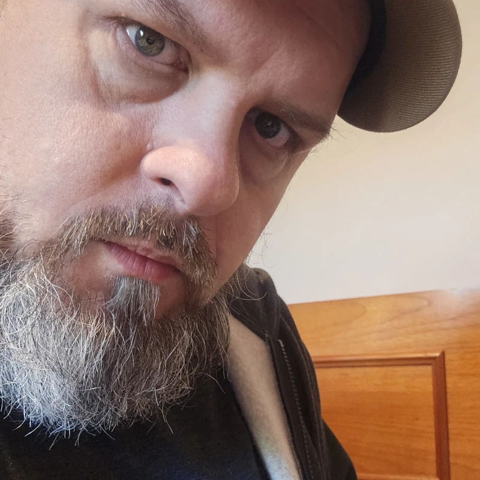

Portfólio autoral
Julis Miró
Artes Visuais • Design Autoral • Expressão Sonora
Galeria
Colagens, desenhos e experimentações visuais que atravessam o analógico e o digital.

Sobre o artista
Julis Miró explora as fronteiras entre o visual e o auditivo, combinando traços expressivos, colagens viscerais e arranjos sonoros autorais. Seu trabalho transita entre o mistério da figuração e a energia da cultura contemporânea, transformando conceitos e sentimentos em experiência visual e áudio.
Sou artista visual, escritor e músico independente, nascido em São Paulo, onde aprendi cedo que o ruído da cidade pode ser matéria-prima para arte. Minha criação é multimodal — atravessa linguagens, misturando colagem, palavra, som e imagem.
No Substack, publico textos e reflexões sobre o colapso social, a condição humana e a arte como gesto político. No TikTok, a poesia ganha corpo em vídeo: performances, colagens em movimento e experimentos visuais e sonoros.
Na música, componho sob o nome Quase Livres, projeto disponível em plataformas de streaming. As colagens e desenhos são meu modo de reordenar o caos visual do cotidiano — fragmentos, traços e texturas que questionam consumo, corpo e memória.
- Projeto musical Quase Livres — singles e álbum autorais
- Colagens e desenhos em mídia mista, analógica e digital
- Publicações e performances em Substack e TikTok
Últimos Ensaios
Textos e críticas sobre colapso social, marxismo, cultura contemporânea e o papel da arte.
Carregando ensaios do Substack...
Música
Quase Livres — rock pesado, grooves brasileiros e letras de ativismo político e marxismo.
Clipe Oficial
Assista ao videoclipe de REVOLUÇÃO, single do projeto Quase Livres.
Entre em contato
Para aquisição de obras, parcerias, licenciamento ou imprensa — envie sua mensagem pelo formulário.
- Aquisição de obra
- Parceria / Licenciamento
- Imprensa / Curadoria
Redes & Processos
Acompanhe os bastidores do ateliê, reflexões analíticas e colagens em movimento.
Substack
Ensaios, críticas de arte e reflexões sobre a condição humana e a arte como gesto político.
@julismiroInstagram
Bastidores do ateliê, colagens em movimento e experimentos cotidianos.
@julis.miro